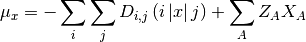
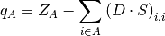
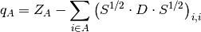
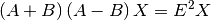
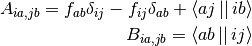

Properties¶
This section containts information about atomic and molecular properties that can be calculated.
Molecular dipole¶
The molecular dipole in one dimension is found as:

FUNCTION:
- Properties.dipolemoment(basis, input, D, results)
- return results
Input:
- basis, basisset object
- input, inputfile object
- D, density matrix
- results, results object
Output:
- results, results obejct with added entries
- results[‘dipolex’] = ux
- results[‘dipoley’] = uy
- results[‘dipolez’] = uz
- results[‘dipoletot’] = u
Refrence:
- Szabo and Ostlund, Modern Quantum Chemistry: Introduction to Advanced Electronic Structure Theory
Mulliken charges¶
The atomic charge of the A’th atom can be found as:

FUNCTION:
- Properties.MulCharge(basis, input, D)
- None
Input:
- basis, basisset object
- input, inputfile object
- D, density matrix
Output:
- None
Refrence:
- Szabo and Ostlund, Modern Quantum Chemistry: Introduction to Advanced Electronic Structure Theory
Lowdin charges¶
The atomic charge of the A’th atom can be found as:

FUNCTION:
- Properties.LowdinCharge(basis, input, D)
- None
Input:
- basis, basisset object
- input, inputfile object
- D, density matrix
Output:
- None
Refrence:
- Szabo and Ostlund, Modern Quantum Chemistry: Introduction to Advanced Electronic Structure Theory
Random-Phase Approximation Exciation energy¶
The excitation energies can be calculated by using the random-phase approximation also known as time dependent Hartree-Fock. The exciation energy is found by diagonalizing the following equation:

with the elements given as:

All of the elements are in spin basis.
FUNCTION:
- Properties.RPA(F, C, input, results)
Input:
- F, fock matrix in spatial basis
- C, MO coeffcients in spatial basis
- input, inputfile object
- results, results object
Output:
- results, results obejct with added entries
- results[‘RPA Exc’] = Exc
References: